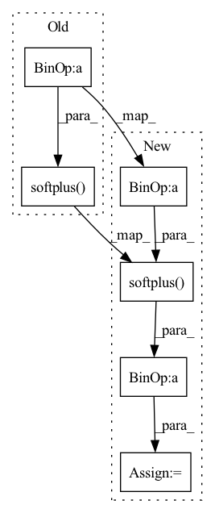

Pattern ID :722

Before Change
lo_cens | hi_cens, ones, sdp - sdm).log()
// sdm_term = torch.where(
// hi_cens, ones, (q + sdm)).log()
sdm_term = torch.where(hi_cens, zeros, x_ + F.softplus(-sd-x_))
// sdp_term = torch.where(
// lo_cens, ones, (q + sdp)).log()
sdp_term = torch.where(lo_cens, zeros, x_ + F.softplus(sd-x_))
After Change
diff_term = torch.where(lo_cens | hi_cens,
ones, sd.exp() - (-sd).exp()
).log()
minus_sp_term = torch.where(hi_cens, -sd, F.softplus(-sd-x_))
plus_sp_term = torch.where(lo_cens, zeros, x_ + F.softplus(sd-x_))
log_delta_cdf = diff_term - minus_sp_term - plus_sp_term
// log prob
r = {
In pattern: SUPERPATTERN
Frequency: 3
Non-data size: 6
Instances
Fragment ID: 2402964
Project Name: intelligent-instruments-lab/iil-python-tools
Commit Name: 3cfb0feff3aa13a704a8a16302c1d7bbde37807f
Time: 2022-03-17
Author: victor.shepardson@gmail.com
File Name: notepredictor/notepredictor/distributions.py
M Class Name: CensoredMixtureLogistic
N Class Name: CensoredMixtureLogistic
M Method Name: forward(3)
N Method Name: forward(3)
M Parent Class: nn.Module
N Parent Class: nn.Module
M File Name: notepredictor/notepredictor/distributions.py
N File Name: notepredictor/notepredictor/distributions.py
M Start Line: 53
M End Line: 99
N Start Line: 54
N End Line: 86
'>
Before Change
neg_weight = torch.max(torch.zeros_like(neg_weight), neg_weight)
lse_negative = torch.logsumexp(self.log_scale * (neg - self.neg_margin) * neg_weight, dim=-1)
loss = F.softplus(lse_positive + lse_negative) / self.log_scale
return torch.mean(loss), accuracy, furthest_positive.tolist(), average_negative.tolist(), 0, dists
After Change
lse_negative_row = torch.logsumexp(self.log_scale * (neg - self.neg_margin) * neg_weight, dim=-1)
lse_negative_col = torch.logsumexp(self.log_scale * (neg - self.neg_margin) * neg_weight, dim=-2)
loss_row = F.softplus(lse_positive + lse_negative_row) / self.log_scale
loss_col = F.softplus(lse_positive + lse_negative_col) / self.log_scale
loss = (loss_row + loss_col) / 2
return torch.mean(loss), accuracy, furthest_positive.tolist(), average_negative.tolist(), 0, dists
'>
Fragment ID: 2402960
Project Name: xuyangbai/d3feat.pytorch
Commit Name: 6b04056015be694539faaea65d814b508e6a265b
Time: 2020-07-17
Author: 653823597@qq.com
File Name: utils/loss.py
M Class Name: CircleLoss
N Class Name: CircleLoss
M Method Name: forward(4)
N Method Name: forward(4)
M Parent Class: nn.Module
N Parent Class: nn.Module
M File Name: utils/loss.py
N File Name: utils/loss.py
M Start Line: 144
M End Line: 159
N Start Line: 125
N End Line: 161
'>
Before Change
lse_negative_col = torch.logsumexp(self.log_scale * (self.neg_margin - neg) * neg_weight, dim=-2)
loss_col = F.softplus(lse_positive + lse_negative_row) / self.log_scale
loss_row = F.softplus(lse_positive + lse_negative_col) / self.log_scale
loss = loss_col + loss_row
return torch.mean(loss), accuracy, furthest_positive.tolist(), average_negative.tolist(), 0, dists
After Change
lse_negative_col = torch.logsumexp(self.log_scale * (self.neg_margin - neg) * neg_weight, dim=-2)
loss_col = F.softplus(lse_positive_row + lse_negative_row) / self.log_scale
loss_row = F.softplus(lse_positive_col + lse_negative_col) / self.log_scale
loss = loss_col + loss_row
return torch.mean(loss), accuracy, furthest_positive.tolist(), average_negative.tolist(), 0, dists
'>
Fragment ID: 2402968
Project Name: xuyangbai/d3feat.pytorch
Commit Name: 40203d748b6b5c28edf1c3422c0f2ae1023346b1
Time: 2021-01-07
Author: 653823597@qq.com
File Name: utils/loss.py
M Class Name: CircleLoss
N Class Name: CircleLoss
M Method Name: forward(4)
N Method Name: forward(4)
M Parent Class: nn.Module
N Parent Class: nn.Module
M File Name: utils/loss.py
N File Name: utils/loss.py
M Start Line: 111
M End Line: 141
N Start Line: 112
N End Line: 138